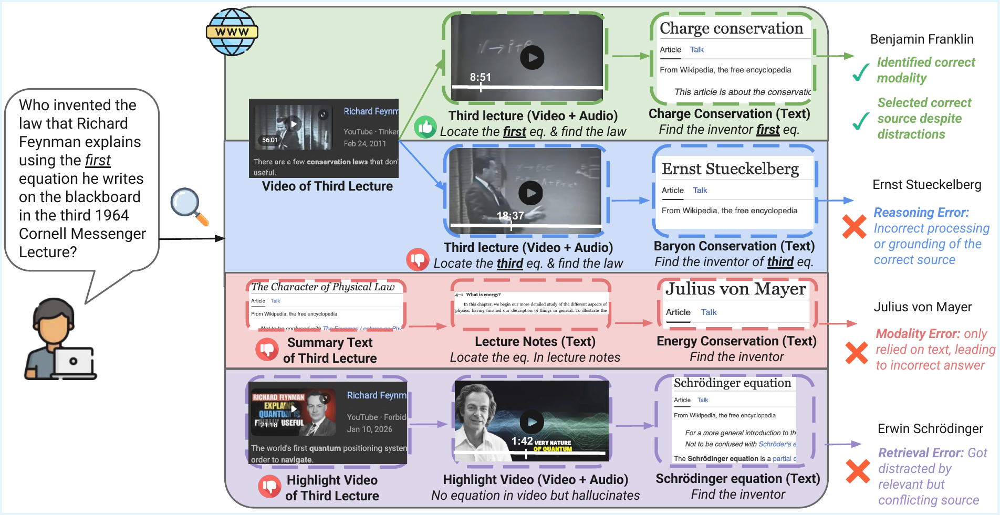

Overview of MERRIN. Given a query, the agent must identify the appropriate modality, retrieve relevant evidence, and perform multi-hop reasoning over noisy, conflicting, and incomplete web sources. The green path shows the ideal case: the agent selects the correct modality and source, arriving at the correct answer. The remaining paths illustrate three failure modes: Reasoning Error (blue)—correct source retrieved but incorrect grounding to the evidence; Modality Error (red)—agent relies on text when asked about visual information; Retrieval Error (purple)—correct modality but misleading source selected.
Motivated by the underspecified, multi-hop nature of search queries and the multimodal, heterogeneous, and often conflicting nature of real-world web results, we introduce MERRIN (Multimodal Evidence Retrieval and Reasoning in Noisy Web Environments), a human-annotated benchmark for evaluating search-augmented agents. MERRIN measures AI agents' ability to identify relevant modalities, retrieve multimodal evidence, and perform multi-hop reasoning over noisy web sources. It differs from prior work in three important aspects: (1) using natural language queries without explicit modality cues, (2) incorporating underexplored modalities such as video and audio, and (3) requiring the retrieval of complex, often noisy or conflicting multimodal evidence during web search. We evaluate diverse search agents powered by ten models, including strong closed-source models (e.g., GPT-5.4-mini, Gemini 3/3.1 Flash/Pro) and open-weight models (Qwen3-4B/30B/235B), across three search settings (no search, native search, and agentic search). Our results show that MERRIN is highly challenging: the average accuracy across all agents is 22.3%, with the best-performing agent reaching only 40.1%. We further observe that while stronger agents like Gemini Deep Research achieve higher performance, gains are modest due to over-exploration; they take more steps and use more tools, but are often distracted by conflicting or partially relevant web content, leading to incorrect answers. Our analysis of agent bottlenecks shows that while both search effectiveness and multimodal reasoning remain critical challenges, reasoning is the more pressing limitation. Compared to humans, these agents consume more resources yet achieve lower accuracy, largely due to inefficient source selection and an overreliance on text modalities. These findings highlight the need for search agents capable of robust search and reasoning across diverse modalities in noisy web environments, making MERRIN a valuable testbed for evaluating such capabilities.
| Benchmark | No Explicit Modality Cues |
Evidence Modalities |
Web Noise Reflection |
Multi-hop | Human Annotated |
Open Search |
|---|---|---|---|---|---|---|
| BrowseComp | – | T | ✗ | ✓ | ✓ | ✓ |
| MM-BrowseComp | ✗ | T/I/V | ✗ | ✓ | ✓ | ✓ |
| BrowseComp-VL | ✗ | T/I | ✗ | ✓ | ✗ | ✓ |
| BrowseComp-V3 | ✗ | T/I | ✗ | ✓ | ✓ | ✓ |
| SealQA | – | T | ✓ | ✓ | ✓ | ✓ |
| MMSearch | – | T/I | ✗ | ✓ | ✓ | ✗ |
| MMSearch-Plus | ✗ | T/I | ✓ | ✓ | ✓ | ✓ |
| MERRIN (Ours) | ✓ | T/I/V/A | ✓ | ✓ | ✓ | ✓ |
Comparison of MERRIN with existing benchmarks. We compare datasets across multiple dimensions: whether queries do not contain explicit modality cues (No Explicit Modality Cues), evidence modalities necessary to answer them (Evidence Modalities), whether questions reflect noisy or conflicting web sources (Web Noise Reflection), whether they require multi-hop reasoning (Multi-hop), whether they are human-annotated (Human Annotated), and whether they support open-web search (Open Search). MERRIN uniquely covers all dimensions, supporting multiple evidence modalities across text (T), image (I), video (V), and audio (A). "–" in No Explicit Modality Cues indicates settings where modality selection is unnecessary (e.g., controlled or single modality setups).
Questions are phrased in natural language without explicit references to specific modalities (e.g., "in the image..."), requiring agents to independently identify what to retrieve.
Evidence spans text, images, video, and audio—going beyond the text+image focus of prior work to cover modalities common in real-world web search.
Questions are designed so that web search returns not only relevant documents but also incomplete, conflicting, or misleading distractors.
73.5% of questions require both multi-hop reasoning across sources and multimodal conflict resolution, testing complex compositional reasoning.
162 expert-curated questions with multi-round quality control, including adversarial text-only search verification to ensure non-text evidence is required.
Agents search the live open web rather than a static corpus, reflecting realistic deployment conditions for search-augmented AI systems.
We evaluate search-augmented agents powered by ten models under three search settings:
No search tool is provided. The model relies solely on its parametric knowledge to answer questions.
Each model uses its built-in search tools (e.g., Google Search for Gemini, Bing for GPT). Native Search often does not support video and audio processing.
A multimodal search agent framework (built with smolagents) equips models with tools to search, visit webpages, and process videos across all modalities.
| Model | No Search | Native Search | Agentic Multimodal Search | ||||
|---|---|---|---|---|---|---|---|
| Acc | Acc | # Search Qs | # Pages | Acc | # Search Qs | # Pages | |
| Qwen3-4B | 10.3±0.4 | – | – | – | 10.5±1.6 | 1.7±0.0 | 0.2±0.1 |
| Qwen3-30B | 8.0±0.6 | – | – | – | 16.1±0.6 | 2.0±0.1 | 0.5±0.0 |
| Qwen3-235B | 12.1±0.9 | – | – | – | 23.3±1.3 | 3.0±0.2 | 1.0±0.1 |
| GPT-5.4-nano | 9.9±2.7 | 12.6±1.3 | 37.7±2.4 | 5.9±0.4 | 31.9±3.0 | 11.6±0.4 | 7.5±0.4 |
| GPT-5.4-mini | 14.0±0.4 | 15.6±0.4 | 38.6±3.7 | 5.3±0.2 | 31.1±3.1 | 9.2±0.3 | 3.4±0.2 |
| Gemini 3 Flash | 19.1±3.2 | 31.7±3.8 | 44.1±0.6 | 0.1±0.0 | 32.9±0.9 | 14.8±0.5 | 1.4±0.0 |
| Gemini 3 Pro | 23.5±1.1 | 28.8±1.4 | 34.9±2.0 | 0.1±0.0 | 39.9±1.6 | 8.4±0.3 | 3.0±0.1 |
| Gemini 3.1 Lite | 12.8±2.3 | 20.6±2.2 | 19.2±1.1 | 0.0±0.0 | 26.3±1.9 | 8.3±0.1 | 0.8±0.1 |
| Gemini 3.1 Pro | 24.7±1.6 | 29.0±1.1 | 35.8±0.9 | 0.1±0.0 | 40.1±2.8 | 8.6±0.3 | 2.9±0.0 |
| Gemini Deep Research | – | 33.3±2.2 | – | – | – | – | – |
Performance of search agents powered by different models on MERRIN. Acc denotes average accuracy (%) over three runs with standard deviation, # Search Qs is the average number of search queries issued per question, and # Pages is the average number of webpages explicitly visited and read per question. No Search has no search module; thus, both # Search Qs and # Pages are 0. Gemini 3.1 Lite refers to Gemini 3.1 Flash Lite, and Gemini Research refers to the Gemini Deep Research Agent. For Qwen models, Native Search is not applicable since they do not have an internal search agent. Gemini Research only supports using its built-in search system (Native Search) and detailed outputs are unavailable, so # Search Qs and # Pages are omitted.
To isolate whether performance limitations stem from search or reasoning, we progressively provide gold evidence to the best agent (Gemini-3.1-Pro).
| Setting | Web Search | Gold Sources | Agent Tools | Acc. |
|---|---|---|---|---|
| No Search | ✗ | ✗ | ✗ | 24.7±1.6 |
| Native Search | ✓ | ✗ | ✗ | 29.0±1.1 |
| Agentic Multimodal Search | ✓ | ✗ | ✓ | 40.1±2.8 |
| + Gold Sources Injection | ✓ | ✓ | ✓ | 43.4±3.8 |
| + Gold Sources Only | ✗ | ✓ | ✓ | 45.5±2.3 |
| Gold Sources Prompting | ✗ | ✓ | ✗ | 47.7±2.0 |
Isolating search vs. reasoning limitations for Gemini-3.1-Pro on MERRIN. Web Search: whether the agent can search the open web. Gold Sources: whether gold sources are provided. Agent Tools: whether the agent can use custom tools (visit_webpage, watch_video) to process evidence.
From open search to perfect gold evidence (40.1% → 47.7%), upper-bounding the cost of search-stage limitations.
Even with perfect gold evidence, accuracy remains at only 47.7%, indicating that while both search and reasoning remain critical challenges, improving reasoning is the more pressing bottleneck.
| System | Performance | Search Effort | Modality (%) | URL Overlap w/ Golden | ||||||||
|---|---|---|---|---|---|---|---|---|---|---|---|---|
| Acc. (%) | Acc@5min (%) | Time (min) | Searches | Visits | URLs | Text | Video | Image | Prec. | Rec. | F1 | |
| Human | 71.4 | 59.2 | 4.1 | 2.9 | 2.9 | – | 53.2 | 28.2 | 18.5 | 38.1 | 48.9 | 42.8 |
| Native | 30.9 | 29.6 | 2.3 | 9.8 | 0.1 | 34.9 | 96.2 | 0.0 | 3.8 | – | – | – |
| Agentic | 40.1 | 34.0 | 4.0 | 9.1 | 3.5 | 63.6 | 87.0 | 4.4 | 8.5 | 1.8 | 61.4 | 3.6 |
Performance across human annotators, Native Search (Native), and Agentic Multimodal Search (Agentic) with Gemini 3.1 Pro. Acc@5min: accuracy under a 5-minute budget, where any question taking more than 5 minutes is counted as incorrect. Time: average completion time in minutes. Search Effort: average number of search queries issued (Searches), webpages visited (Visits), and unique URLs encountered (URLs) per question. Modality: distribution of resource modalities among accessed content. URL Overlap w/ Golden: precision, recall, and F1 of the system's visited URLs against the golden reference URLs.
Humans achieve 71.4% accuracy with only 2.9 searches and 2.9 visits, while the agentic system needs 9.1 searches and 3.5 visits to reach only 40.1%.
Humans achieve 38.1% URL precision vs. 1.8% for agents. Although agents attain high recall (61.4%) due to the sheer volume of URLs, the vast majority are irrelevant.
Humans use a balanced mix of modalities (53.2% text, 28.2% video, 18.5% image), while agents are heavily text-dominant (87.0% text for agentic, 96.2% for native).
Humans benefit substantially from additional time (59.2% → 71.4%), while agents show diminishing returns (34.0% → 40.1%), consistent with over-exploration rather than productive deepening of search.
Among incorrect human responses, errors are predominantly minor extraction mistakes rather than fundamental failures in source identification.
Correct source identified but miscounted by a small margin (e.g., off by one album cover or one second of video).
Correct resource found but wrong detail extracted, such as reading a value from the wrong moment in a video.
On the right track but insufficiently specific (e.g., "conservation law" instead of "conservation of charge").
Genuinely incorrect answers where the annotator failed to identify the correct source or reasoning path.
86% of human errors involve the correct source but fail at fine-grained information extraction—underscoring that the benchmark's difficulty lies in precise multimodal extraction rather than source discovery.
@article{wang2026merrin,
title={MERRIN: Multimodal Evidence Retrieval and Reasoning in Noisy Web Environments},
author={Han Wang and David Wan and Hyunji Lee and Thinh Pham and Mikaela Cankosyan and Weiyuan Chen and Elias Stengel-Eskin and Tu Vu and Mohit Bansal},
year={2026},
journal={arXiv preprint arXiv:}
}